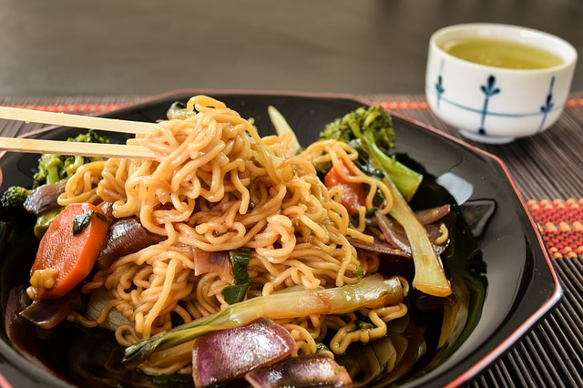

Yakisoba

Fideos salteados con verduras y cualquier proteina a eleccion, todo sasonado con una salsa asiática adaptada muy accesible.
Ingredientes:
- Fideos cocidos (cualquier tipo)
- Cebolla
- Verduras a elección (zanahoria, chaucha, brocoli, choclo, morron, arvejas, etc.)
- Lechuga o repollo
- Proteína a elección (Carne de cerdo,vacuna, camarón, etc. Puede reemplazarse con brote de soja.)
- Salsa de soja
- Azucar
- Sal y pimienta
- Vinagre
- Ketchup y barbacoa
Para la salsa:
Mezclar una cucharada de barbacoa, una cucharada de ketchup, un chorrito de vinagre, una cucharada de azucar y salsa de soja a gusto.
Para los fideos:
- Cortar las verduras y la carne elegida en cubitos y separar para despues. Cortar tambien las hojas de lechuga (o el repollo)en tiras.
- Cortar la cebolla en juliana y saltear en abundante aceite.
- Incorporar la carne elegida y saltear hasta que este cocida
- Incorporar la verdura según tiempo de cocción (Por ej. primero la zanahoria, luego el brocoli y al final la lechuga y la cebolla de verdeo) y saltear hasta alcanzar un punto semicrudo.
- Agregar los fideos y la salsa. Salpimentar a gusto y mezclar a fuego bajo para que no pierda humedad hasta incorporar bien todo.
- Retirar del fuego y servir. Se pueden agregarle semillas pararesentar.